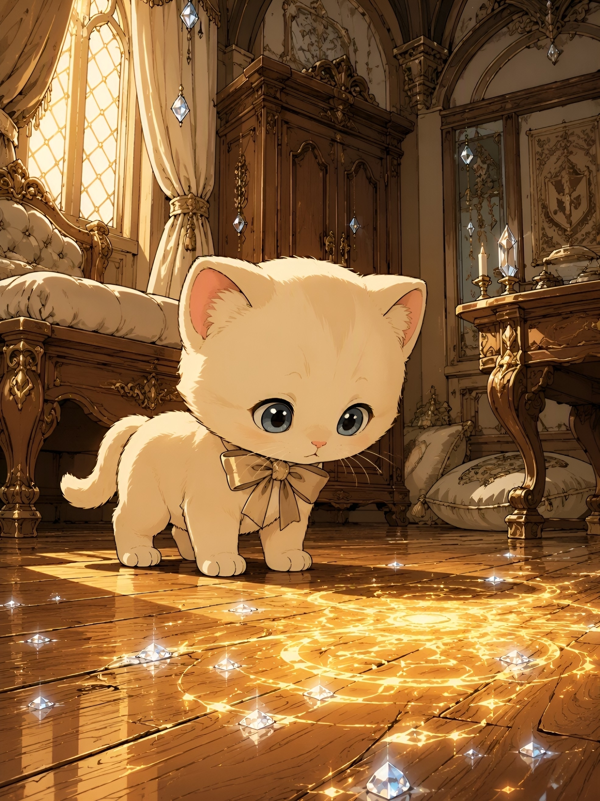

The grand room breathed with soft gold light, the kind that pools downward like warm honey, settling into every corner where shadow might otherwise gather. Hoshiko stepped carefully across the wooden floor, his cream fur catching the illumination as he moved—a small figure in a space designed for giants, yet the household seemed to shrink around him with each careful placement of his tiny paws.
His eyes were enormous, dark gray-blue pools that reflected everything they touched. Each breath came slowly, steadily, as if the sheer wonder of the room required him to move through it with reverence. He had learned, in his short four months of existence, that curiosity was not haste but gentleness—that the world revealed itself only to those patient enough to truly see.
And then he noticed it.

A soft glow had begun to shimmer across the wooden planks before him. Not harsh, not alarming—but alive with a gentle pulse, as though the floor itself had begun to breathe. The light was warm and golden, traced along the natural grainlines of the enchanted wood, following the carved patterns that flowed in soft arcs from upper left to lower right. Hoshiko paused, his entire being still.
He took three slow steps forward, his paws silent against the warm honey-caramel boards. The glow intensified slightly, not in threat, but in acknowledgment. It was as if the house itself was speaking—not in words, but in light, in warmth, in the gentle magic woven through every beam and board. His head lowered, his gray-blue eyes widening with something that felt too profound to name.
The glow pulsed again, and Hoshiko's breathing slowed. This was the moment. The room surrounded him in cream-colored textiles and soft gold shimmer, the tall draped curtains framing windows that fell from ceiling to floor like waterfalls of gentle shadow. The crystal accents on the shelves caught the magical light and threw it back as soft blue refractions, dancing across the walls in patterns that had no name.
He lowered himself into a sitting position, his tiny form barely visible against the immense grandeur of the heirloom bed behind him, the wide carved table beyond, the shelves that rose like mountains of warm wood and soft mystery. But in this moment, he was not small. He was exactly the right size for wonder.
The glow continued its gentle pulsing beneath his gaze. It did not demand anything. It did not speak or move with urgency. It simply was—a presence, a companion, a quiet acknowledgment that he existed in this space, that he belonged in this household of warmth and magic. His small beige bow, anchored at his neck, caught a reflected gleam of cream-yellow light, but he did not notice. He was entirely present with the mystery before him.
This was the beginning. This was the moment when curiosity became awe, when the world transformed from a place to be cautiously explored into a realm worthy of reverence. Alone in the grand noble home, a tiny kitten sat suspended between wonder and understanding, between the known and the infinite, watching as gentle magic pulsed softly across the floor beneath his paws.
The household held him in its warmth. And Hoshiko, for the first time, truly understood that he was home.